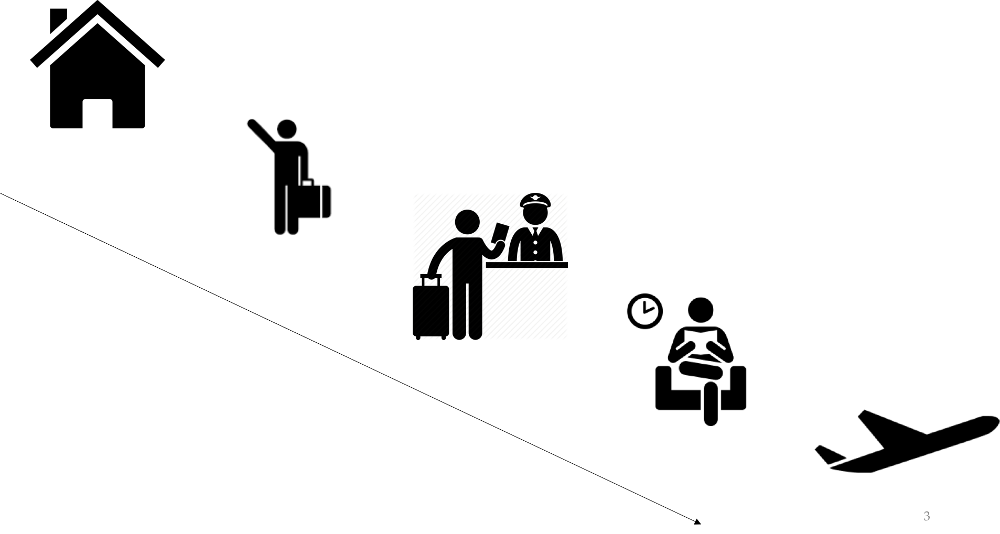

## Airport Security 2.0 Part1: Approaches to deception detection Part2: Future developments

<img width="90%" height="90%" top="20%" data-src="./img/baserate_problem.png">
<img width="80%" height="10%" data-src="./img/baserate_problem.png"> | Terrorist | Passenger | --- | --- | --- | --- | --- | **Terrorist** | <p class="fragment highlight-red">950</p> | 50 | 1,000 **Passenger** | 4,950 | 94,050 | 99,000 | <p class="fragment highlight-red">5,900</p> | 94,100 | <p class="fragment highlight-red">100,000</p> <p class="fragment">Precision: 950/5900 = 16.10%</p>
## Deception detection
## Behavior detection e.g. SPOT What are the problems?
## Behavior detection - stress-based assumption - problem of "innocent stress"
### Related methods - Polygraph - Thermal imaging - Voice Stress Analysis Same assumption, same problems
<!-- cogn based --> ## Cognitive deception detection
<!-- verbal --> ### Verbal deception detection - verbal content --> deception - _what_ someone says/writes Vrij's studies <small>Vrij et al., 2015</small> <small>but: Levine et al., 2017</small>
**Reality Monitoring** - external vs internal memory sources - richness of detail - accuracies ca. 70-75% <small>Masip et al., 2005</small>
<!-- verbal VA--> ### The Verifiability Approach The liar's dilemma <p class="fragment"><i>"I met someone on the street and we had a coffee."</i></p> <p class="fragment"><i>"I met James yesterday at 11:30 am on 5th Avenue when we went to Starbucks and paid $3.50 for a coffee"</i></p> <small>Nahari et al., 2014</small>
<!-- verbal VA--> <!-- ### The Verifiability Approach --> <small>Kleinberg et al., 2016</small>
<!-- linguistic --> ### Stylometric deception detection - _how_ someone writes - authorship attribution & author profiling - writing style --> deception - involuntary processes - word types, frequency of words, etc. <small>Fornaciari & Poesio, 2013</small>
Examples of cues: - punctuation - POS frequencies - mistakes - informal language <small>Ott et al., 2011, 2013</small>
### Comparison | Core | Approach | Cue extraction | Analysis | --- | --- | --- | --- | --- | verbal | What? | theory-led | manual | statistical analysis stylometric | How? | data-driven | automated | machine learning
## Key challenges - intentions - **scalability** (!= manual work)
<!-- computerized approaches --> Needed: computerized techniques
<!-- computerized approaches --> ### Data-driven approaches - computerized cue extraction - machine learning classification Pro & Cons?
### Hybrid approaches theory + computational <!-- Identification + classification of information from text --> I met *James **[PERSON]** * *yesterday **[DATE]** * at *11:30 am **[TIME]** * on *5th Avenue **[LOCATION]** * when we went to *Starbucks **[ORG]** * and paid *$3.50 **[MONEY]** * for a coffee. <small>Kleinberg et al., 2018</small>
<img width="80%" height="70%" data-src="./img/lucca_figure2.png"> <small>Effect sizes of the truthful-deceptive difference (incl. sparsity correction)</small> <small>Kleinberg et al., 2018</small>
## Approaches at airports
### AVATAR Automated Virtual Agent for Truth Assessments in Real Time <iframe width="784" height="441" src="https://www.youtube.com/embed/AZwfNxRHj_k?rel=0" frameborder="0" allowfullscreen></iframe>
### Controlled Cognitive Engagement 1. Strategic interviewing 1. Elicit rich verbal accounts 1. Test for expected knowledge 1. Restrict verbal maneuvering 1. Raise cognitive load 1. Speech content <small>Ormerod & Dando, 2015</small>
But remember... ... to be continued
### Some questions...
> As (potential) terrorists get smarter and keep developing new ways to strike, would the CCE be able to keep up with that?
> Mock passengers will get money if they get through the airport security. It won’t be a problem if they get caught. They have nothing to lose. Obviously, this situation differs a lot from the situation of a terrorist. How does this difference affect the research?
> Why should solutions based off of 'what works' be too simple to help reach a solution in this matter?
## 10 min break
How would you do it?
# Try it yourself
## Your task - quick interview (5 min) - friendly conversation - make a decision about the passenger
## Considerations - What information do you need? - - expected knowledge - - verifiable information
[Demo chat](chatv003.herokuapp.com)
### What is actually useful? **Critical transition** cue - information - intelligence
<!-- current --> ### Airport Security 2.0 project Requirements: 1. Validated (malintent) 1. Non-intrusive 1. Fast 1. Scalable
<!-- critique? --> ### Any critique?
<!-- next steps --> ### 3 core elements 1. **Scalable data collection** 1. Real-time data analysis 1. **High-stakes settings**
### A first experiment We know: - planning questions promising - unanticipated questions work So: - lying about flying - 10 brief questions + answers [[link to the original task]](http://www.newlylabs.net/wp-content/research/cbdmi/exp1_/desktop/html/main.html) <small>Kleinberg et al., 2017</small>
### Another attempt Maybe?: - use longer statements - use autobiographical intentions - "model statement" technique - specificity hypothesis [[link to this experiment]](http://www.newlylabs.net/wp-content/research/cbdmi/vddpf/exp2/html/main.html) <small>Kleinberg et al., in prep.</small>
Results DV | Truthful | Deceptive | f | --- | --- | --- | --- | Times | 45.60 (55.57) | 48.95 (55.99) | -0.03 ns Dates | 133.89 (93.32) | 139.11 (97.44) | -0.03 ns | | | Persons | 23.68 (48.18) | 40.23 (54.53) | -0.16 Locations | 24.55 (57.81) | 42.82 (68.69) | -0.14
### Predictive modelling findings - supervised machine learning task - 41 psycholinguistic variables - linear SVM classifier - 74.19% (Exp.1) and 68.42% (Exp.2) accuracy
### Current attempt - master's dissertation Isabelle - chat interviews on autobiographical activities <!-- -->
### High-stakes settings ... Upcoming experiment ...
### Scalable data collection - chatbot interview - diagnostic questions - unpredicability
### Scalable data collection
## Next week... Paul Gill (UCL): Terrorism and Crime Science ---------------------- These slides: [here](http://newlylabs.net/wp-content/slides/reveal_js_slides/crimescience_sem1_20172018_lecture2.html#/) Source code on GitHub: [here](https://github.com/ben-aaron188/reveal_js_slides/blob/master/crimescience_sem1_20172018_lecture2.html) References: [here](./dir1/refs_crime_science_2.html) </br> <small>made with <a href="https://github.com/hakimel/reveal.j">[reveal.js]</a></small>